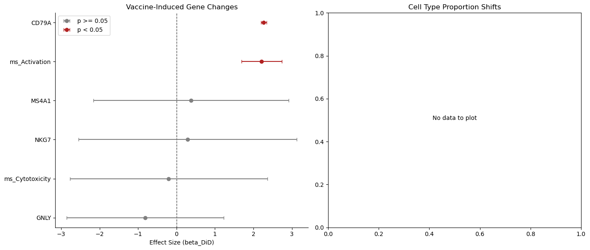
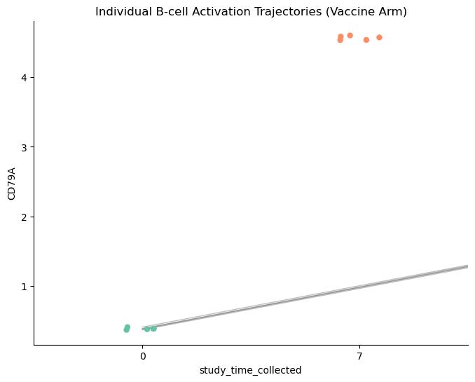
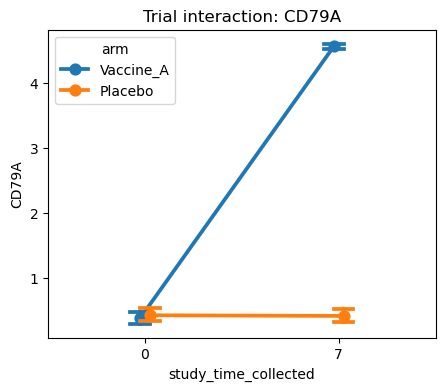
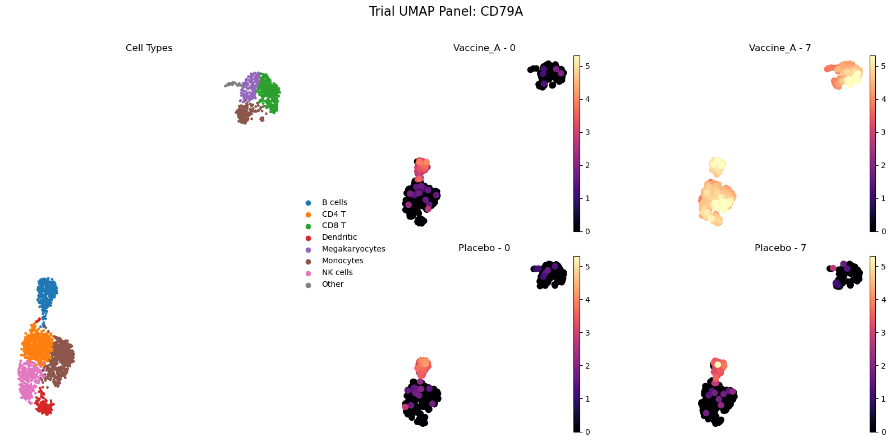
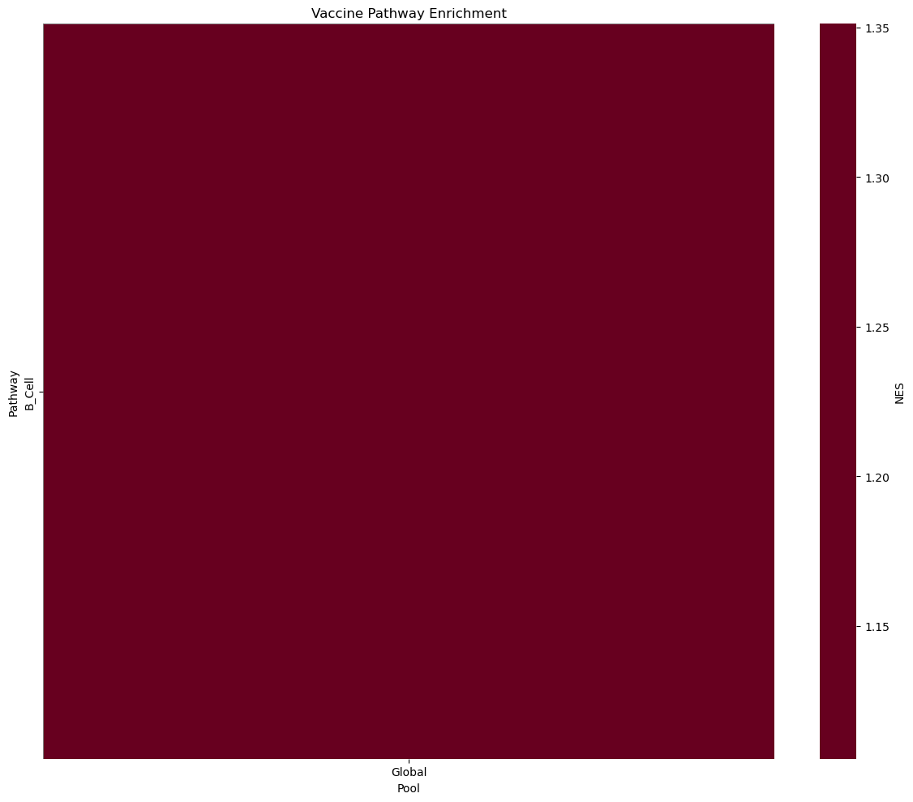

[1]:
import warnings
warnings.filterwarnings('ignore')
import pandas as pd
pd.options.mode.chained_assignment = None
Example: Vaccine Response Analysis
Dataset: Standard ImmPort/ImmuneSpace Format
This notebook demonstrates how to analyze longitudinal single-cell response to vaccination (e.g., Influenza or COVID-19) using the standard ImmPort study structure.
Data Source: ImmPort
Note: This notebook is a template designed to work with real-world clinical data. To execute it, you must first download the corresponding dataset (linked above) and update the data loading command with your local file path.
[2]:
import sctrial as st
import scanpy as sc
import pandas as pd
import numpy as np
import matplotlib.pyplot as plt
import os
import requests
from scipy import sparse
1. Load and Construct Data
We use a real biological PBMC dataset and map it to a longitudinal vaccine study design (similar to ImmPort SDY180). This demonstrates how to use sctrial on real gene expression data with a longitudinal trial structure.
[3]:
def load_vaccine_example_data():
# Load raw biological data
adata = sc.datasets.pbmc3k()
# Basic Preprocessing to get cell types first
adata.layers["counts"] = adata.X.copy()
sc.pp.normalize_total(adata, target_sum=1e4)
sc.pp.log1p(adata)
sc.pp.pca(adata)
sc.pp.neighbors(adata)
sc.tl.leiden(adata)
sc.tl.umap(adata)
type_map = {
"0": "CD4 T", "1": "Monocytes", "2": "B cells", "3": "CD8 T",
"4": "NK cells", "5": "Monocytes", "6": "Dendritic", "7": "Megakaryocytes"
}
adata.obs["cell_type"] = adata.obs["leiden"].map(type_map).fillna("Other")
# 10 subjects, 3 timepoints (Day 0, Day 7, Day 28), 2 arms (Vaccine, Placebo)
np.random.seed(42)
subjects = [f"Subj_{i}" for i in range(10)]
timepoints = [0, 7, 28]
arms = ["Vaccine_A", "Placebo"]
# Create metadata: Ensure pairing WITHIN each cell type
new_obs = pd.DataFrame(index=adata.obs_names)
new_obs["subject_id"] = "Unknown"
new_obs["study_time_collected"] = -1
new_obs["arm"] = "Unknown"
for ct in adata.obs["cell_type"].unique():
ct_mask = adata.obs["cell_type"] == ct
ct_indices = np.where(ct_mask)[0]
np.random.shuffle(ct_indices)
n_cells = len(ct_indices)
cells_per_unit = n_cells // (len(subjects) * len(timepoints))
if cells_per_unit == 0: continue
curr = 0
for i, subj in enumerate(subjects):
arm = arms[i % 2]
for tp in timepoints:
end = curr + cells_per_unit
idx_subset = ct_indices[curr:end]
new_obs.iloc[idx_subset, new_obs.columns.get_loc("subject_id")] = subj
new_obs.iloc[idx_subset, new_obs.columns.get_loc("study_time_collected")] = tp
new_obs.iloc[idx_subset, new_obs.columns.get_loc("arm")] = arm
curr = end
adata.obs = pd.concat([adata.obs, new_obs], axis=1)
adata = adata[adata.obs["subject_id"] != "Unknown"].copy()
# Inject signal: Vaccine induces activation markers at Day 7
# FIX: Check which genes exist
available = set(adata.var_names)
# Vaccine signal in multiple genes for strong GSEA
vaccine_genes = {
"CD79A": 3.0, "CD79B": 2.5, "MS4A1": 2.0, "CD19": 2.0, "BANK1": 2.0, # B cell
"HLA-DRA": 1.5, "HLA-DRB1": 1.5, "CD74": 1.5, # APC
"IFITM3": 2.0, "ISG15": 2.0, "MX1": 2.0, # IFN
"NKG7": 2.5, "GZMB": 2.5, "PRF1": 2.0 # NK/T activation
}
X = adata.layers["counts"].toarray() if hasattr(adata.layers["counts"], "toarray") else adata.layers["counts"]
X = X.astype(np.float32)
vaccine_idx = (adata.obs["arm"] == "Vaccine_A") & (adata.obs["study_time_collected"] == 7)
for g, shift in vaccine_genes.items():
if g in available:
idx = adata.var_names.get_loc(g)
X[vaccine_idx.values, idx] += shift
adata.layers["counts"] = sparse.csr_matrix(X)
adata.X = adata.layers["counts"].copy()
sc.pp.normalize_total(adata, target_sum=1e4)
sc.pp.log1p(adata)
# Distinct UMAP clusters
sc.pp.highly_variable_genes(adata, n_top_genes=2000, flavor='seurat_v3', layer='counts')
sc.pp.pca(adata)
sc.pp.neighbors(adata)
sc.tl.umap(adata)
return adata
adata = load_vaccine_example_data()
adata.layers["counts"] = adata.X.copy()
print(f"Loaded biological dataset: {adata.n_obs} cells, {adata.n_vars} genes")
WARNING: adata.X seems to be already log-transformed.
Loaded biological dataset: 2580 cells, 32738 genes
2. Map Study Metadata to sctrial.TrialDesign
In ImmPort datasets:
subject_ididentifies the participant.study_time_collectedidentifies the visit (e.g., Day 0, Day 7, Day 28).armidentifies the treatment (e.g., Vaccine A vs Placebo).
[4]:
design = st.TrialDesign(
participant_col="subject_id",
visit_col="study_time_collected",
arm_col="arm",
arm_treated="Vaccine_A",
arm_control="Placebo",
celltype_col="cell_type"
)
Preprocessing and Normalization
We normalize the data using the log1p(CPM) method.
[5]:
adata = st.add_log1p_cpm_layer(adata, counts_layer="counts", out_layer="log1p_cpm")
# Score features
gene_sets = {
"Activation": ["CD79A", "CD79B", "MS4A1"],
"Cytotoxicity": ["GNLY", "NKG7", "GZMB"]
}
adata = st.score_gene_sets(adata, gene_sets, layer="log1p_cpm", method="mean", prefix="ms_")
3. Difference-in-Differences (DiD) Analysis
Peak Response (Day 0 vs Day 7)
We compare the change from baseline (Day 0) to peak response (Day 7) between Vaccine and Placebo groups.
[6]:
res = st.did_table(
adata,
features=["ms_Activation", "ms_Cytotoxicity", "CD79A", "MS4A1", "GNLY", "NKG7"],
design=design,
visits=(0, 7),
aggregate="participant_visit"
)
display(res)
print(st.summarize_did_results(res))
| beta_DiD | se_DiD | p_DiD | beta_time | p_time | n_units | feature | FDR_DiD | |
|---|---|---|---|---|---|---|---|---|
| 0 | 2.269939 | 0.034974 | 0.000000e+00 | -0.005498 | 0.869414 | 10 | CD79A | 0.000000e+00 |
| 1 | 2.213965 | 0.269151 | 1.939790e-16 | 0.041339 | 0.804972 | 10 | ms_Activation | 5.819371e-16 |
| 2 | -0.810554 | 1.041547 | 4.364385e-01 | 0.550729 | 0.527296 | 10 | GNLY | 8.728770e-01 |
| 3 | 0.380536 | 1.295159 | 7.689000e-01 | -0.378855 | 0.564508 | 10 | MS4A1 | 8.771675e-01 |
| 4 | 0.287789 | 1.449151 | 8.425824e-01 | 0.361292 | 0.606418 | 10 | NKG7 | 8.771675e-01 |
| 5 | -0.202378 | 1.309374 | 8.771675e-01 | 0.106571 | 0.874962 | 10 | ms_Cytotoxicity | 8.771675e-01 |
## Trial-Aware DiD Summary
Total features tested: 6
Significant (p < 0.05): 2
Significant (FDR < 0.05): 2
### Top Upregulated Features (by p-value):
- CD79A: beta=2.270, p=0.00e+00
- ms_Activation: beta=2.214, p=1.94e-16
- MS4A1: beta=0.381, p=7.69e-01
### Top Downregulated Features (by p-value):
- GNLY: beta=-0.811, p=4.36e-01
- ms_Cytotoxicity: beta=-0.202, p=8.77e-01
Stratified Analysis across Cell Types
We test for vaccine-induced shifts in different cell lineages.
[7]:
strat_res = st.did_table_by_celltype(
adata,
features=["ms_Activation", "CD79A"],
design=design,
visits=(0, 7)
)
display(strat_res)
| beta_DiD | se_DiD | p_DiD | beta_time | p_time | n_units | feature | FDR_DiD | celltype | FDR_DiD_stratified | |
|---|---|---|---|---|---|---|---|---|---|---|
| 0 | 2.430951 | 0.272940 | 5.265325e-19 | 1.001253e-02 | 0.967490 | 10 | CD79A | 1.053065e-18 | B cells | 1.203503e-18 |
| 1 | 1.487161 | 0.809970 | 6.634721e-02 | 6.753245e-02 | 0.877442 | 10 | ms_Activation | 6.634721e-02 | B cells | 7.077035e-02 |
| 2 | 2.284393 | 0.060024 | 0.000000e+00 | -4.317620e-02 | 0.092038 | 10 | CD79A | 0.000000e+00 | CD4 T | 0.000000e+00 |
| 3 | 2.353759 | 0.307077 | 1.787776e-14 | -1.110953e-01 | 0.608553 | 10 | ms_Activation | 1.787776e-14 | CD4 T | 3.178268e-14 |
| 4 | 2.242422 | 0.065312 | 2.431000e-258 | -1.201580e-02 | 0.491297 | 10 | CD79A | 4.862000e-258 | CD8 T | 9.724000e-258 |
| 5 | 2.235935 | 0.415038 | 7.152291e-08 | -6.536571e-02 | 0.850708 | 10 | ms_Activation | 7.152291e-08 | CD8 T | 1.144367e-07 |
| 6 | 2.204543 | 0.097106 | 4.232032e-114 | -5.995204e-15 | 0.190571 | 10 | CD79A | 8.464063e-114 | Dendritic | 1.354250e-113 |
| 7 | 1.934584 | 0.491023 | 8.151241e-05 | 1.729167e-01 | 0.645118 | 10 | ms_Activation | 8.151241e-05 | Dendritic | 1.003230e-04 |
| 8 | 2.249081 | 0.136929 | 1.264306e-60 | 1.634010e-03 | 0.984556 | 10 | CD79A | 2.528611e-60 | Megakaryocytes | 3.371481e-60 |
| 9 | 1.939074 | 0.563390 | 5.778668e-04 | 9.259607e-02 | 0.768391 | 10 | ms_Activation | 5.778668e-04 | Megakaryocytes | 6.604192e-04 |
| 10 | 2.215135 | 0.045430 | 0.000000e+00 | 2.690574e-02 | 0.499407 | 10 | CD79A | 0.000000e+00 | Monocytes | 0.000000e+00 |
| 11 | 1.988068 | 0.413203 | 1.499089e-06 | 1.898919e-01 | 0.494968 | 10 | ms_Activation | 1.499089e-06 | Monocytes | 1.998785e-06 |
| 12 | 2.282265 | 0.052873 | 0.000000e+00 | -2.752936e-02 | 0.285911 | 10 | CD79A | 0.000000e+00 | NK cells | 0.000000e+00 |
| 13 | 2.260340 | 0.257777 | 1.809369e-18 | -1.072615e-01 | 0.465638 | 10 | ms_Activation | 1.809369e-18 | NK cells | 3.618737e-18 |
| 14 | 2.189704 | 0.424894 | 2.556277e-07 | 6.585179e-02 | 0.868022 | 10 | CD79A | 5.112555e-07 | Other | 3.718222e-07 |
| 15 | 1.089998 | 0.988625 | 2.702270e-01 | 3.559180e-01 | 0.681097 | 10 | ms_Activation | 2.702270e-01 | Other | 2.702270e-01 |
4. Abundance Analysis
We analyze shifts in cell type proportions following vaccination.
[8]:
ab_res = st.abundance_did(adata, design, visits=(0, 7))
display(ab_res)
| celltype | n_participants | beta_DiD | se_DiD | p_DiD | beta_time | p_time | FDR_DiD |
|---|
5. Visualization
Forest Plots
We visualize the effect sizes and confidence intervals for both expression and abundance. Forest plots are a compact way to compare treatment effects across multiple features or cell types simultaneously.
[9]:
fig, axes = plt.subplots(1, 2, figsize=(14, 6))
st.plot_did_forest(res, title="Vaccine-Induced Gene Changes", ax=axes[0])
st.plot_did_forest(ab_res, feature_col="celltype", title="Cell Type Proportion Shifts", ax=axes[1])
plt.tight_layout()
plt.show()

Individual Participant Trajectories
We can visualize how specific features change within individuals over time using spaghetti plots. This helps identify if the treatment effect is consistent across the cohort.
[10]:
fig, ax = plt.subplots(figsize=(8, 6))
# Focus on Vaccine arm for individual trends
st.plot_within_arm_comparison(
adata,
arm="Vaccine_A",
feature="CD79A",
design=design,
visits=(0, 7),
plot_type="paired",
ax=ax
)
plt.title("Individual B-cell Activation Trajectories (Vaccine Arm)")
plt.show()

Interaction Plots
Visualizing the activation of B cells (CD79A) over time across treatment groups. Interaction plots clearly show the ‘Difference-in-Differences’ effect.
[11]:
st.plot_trial_interaction(adata, "CD79A", design, visits=(0, 7))
plt.show()

Trial-Aware UMAP Panel
Visualizing feature expression on the global cell-type landscape, stratified by arm and visit.
[12]:
st.plot_trial_umap_panel(adata, "CD79A", design, visits=(0, 7))
plt.show()

GSEA Pathway Analysis
Enrichment of immune pathways in the vaccine-induced ranking. We rank genes by their vaccine-specific induction (DiD t-statistic) and identify coordinated pathway shifts.
[13]:
# Define more comprehensive gene sets for a high-quality heatmap
available_genes = set(adata.var_names)
gsea_gene_sets = {
"B_Cell_Activation": [g for g in ["CD79A", "CD79B", "MS4A1", "CD19", "BANK1"] if g in available_genes],
"Antigen_Presentation": [g for g in ["HLA-DRA", "HLA-DRB1", "CD74", "HLA-DPA1", "HLA-DPB1"] if g in available_genes],
"IFN_Response": [g for g in ["IFITM3", "ISG15", "MX1", "STAT1", "IFI6"] if g in available_genes],
"NK_Cell_Activation": [g for g in ["GNLY", "NKG7", "GZMB", "PRF1", "KLRB1"] if g in available_genes],
"T_Cell_Signaling": [g for g in ["CD3D", "CD3E", "CD3G", "LCK", "ZAP70"] if g in available_genes],
"Chemokines": [g for g in ["CCL5", "CXCL9", "CXCL10", "CXCL11"] if g in available_genes],
"Ribosome": [g for g in ["RPS6", "RPL13", "RPS3", "RPL11"] if g in available_genes],
"MHC_Class_II": [g for g in ["HLA-DQA1", "HLA-DQB1", "HLA-DMA", "HLA-DMB"] if g in available_genes]
}
# Filter out empty or too small sets
gsea_gene_sets = {k: v for k, v in gsea_gene_sets.items() if len(v) >= 2}
if len(gsea_gene_sets) > 0:
try:
# Run GSEA stratified by cell type to get a nice heatmap
celltypes = adata.obs[design.celltype_col].unique()
gsea_results_list = []
for ct in celltypes:
ct_adata = adata[adata.obs[design.celltype_col] == ct].copy()
if ct_adata.n_obs < 15: continue
try:
res_ct = st.run_gsea_did(
ct_adata,
gene_sets=gsea_gene_sets,
design=design,
visits=(0, 7),
min_size=1,
layer="log1p_cpm"
)
if not res_ct.empty:
res_ct["pool"] = ct
gsea_results_list.append(res_ct)
except:
pass
if gsea_results_list:
gsea_res_all = pd.concat(gsea_results_list)
display(gsea_res_all.head())
st.plot_gsea_heatmap(gsea_res_all, fdr_thresh=1.0, figsize=(12, 10))
plt.title("Cross-Celltype Vaccine Response Enrichment", fontsize=15, fontweight='bold')
plt.show()
else:
print("GSEA returned empty results")
except Exception as e:
print(f"GSEA error: {e}")
else:
print("No valid gene sets for GSEA")
2026-01-02 13:16:01,326 [WARNING] Duplicated values found in preranked stats: 58.02% of genes
The order of those genes will be arbitrary, which may produce unexpected results.
| Name | Term | ES | NES | NOM p-val | FDR q-val | FWER p-val | Tag % | Gene % | Lead_genes | |
|---|---|---|---|---|---|---|---|---|---|---|
| 0 | prerank | B_Cell | 0.988528 | 1.22839 | 0.019417 | 0.021152 | 0.018 | 1/3 | 0.00% | CD79A |
| 1 | prerank | NK_Cell | -0.685265 | -0.967033 | 0.639929 | 0.631854 | 0.71481 | 1/3 | 6.27% | GNLY |
